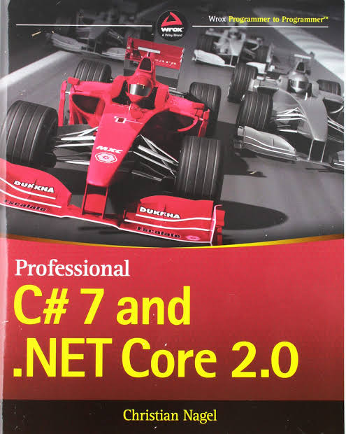

Professional C# 7 and .NET Core 2.0:

Visual Studio 2017 now offers C# 7. Every part of .NET Core delivered as NuGet packages is updated. This expert-level guide is the fastest way for experienced programmers to get up to speed. C# 7 is about getting more done faster, and no one else is better qualified to deliver authoritative details that are valuable in the real world than Microsoft MVP Christian Nagel. With a hands-on clarity that leads to a competitive edge, he shows developers how to bring .NET to non-Microsoft platforms, incorporate tools from such platforms as Docker, Gulp, and NPM, and interact in the space in many other significant ways.
Opens up the extensive new features of C# 7 and .NET Core 2.0 for advanced developers who need state-of-the-art tools
Reveals the latest hacks and practical tips for Visual Studio� 2017, including new user interfaces, additional templates, editor enhancements, and more
Explains innovative ways to streamline workflow in order to code faster, accurately diagnose and debug, test often, and release with confidence
Features step-by-step guidance for developing apps for Android�, iOS, Windows�, Linux�, the web, and the cloud
Jump starts mastery of the productivity features in Visual Studio that accelerate AI innovation.